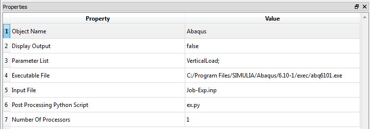
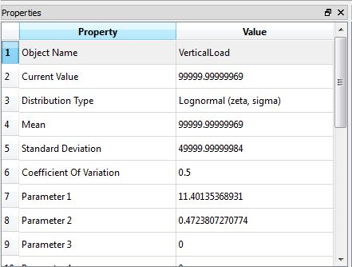
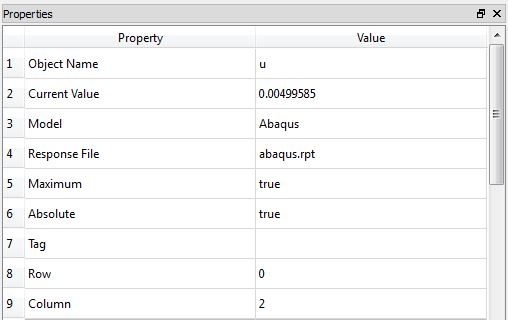
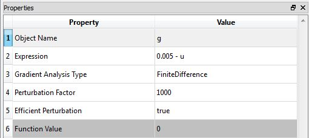

Abaqus
Class Name
Location in Objects Pane
- Models > Model > External Software > Abaqus
Model Description
Model Form
- For users who have Abaqus installed on the computer, this model allows parameters to be given to Abaqus and results to be returned to Rtx.
DDM sensitivities
Properties
Object Name
- Name of the object in Rtx
- Allowable characters are upper-case and lower-case letters, numbers, and underscore (“_”).
- The name is unique and case-sensitive.
Display Output
- Determines whether the model is allowed to print messages to the Output Pane.
Parameter List
- List of the parameters that should be mapped into the Abaqus model.
Executable File
- Absolute path to the Abaqus.exe file, for example:
C:/Abaqus/Abaqus.exe
- Absolute path to the location of the Abaqus input file, for example:
C:/mystructure.inp
Post Processing Python Script
- Absolute path to the location of the Python script due to output extraction, for example:
C:/extractstress.py
Number Of Processors
- Number of multiple processors to be used in parallel analysis
Output
- This model does not automatically create any response objects.
- Rather, creates File Response objects using Python script.
- In those objects, specify the name of the Abaqus and the name of the file where Abaqus saves the generated response in (as shown in the image above).
Right-click Menu
Remove
Example

- To etablish a functioning connection between Abaqus and Rtx and use its results in Rtx, the following procedure could be followed:
- It is recommended that the output files of Abaqus are saved in the same directory as Rtx's executive file.
- Properties of the Abaqus object has to be filled as it has been described above.
- List of random variables also has to be defined. Note that these variables have to have a consistent naming as the ones in the Abaqus object

- To extract the results and use them in Rtx analyses, one can create a File Response like this:

- Please note that assigning 0 and 2 to Row and Column properties respectively, makes Rtx to search all rows of second column for data. For more information you can check File Response.
- Finally, a proper Limit State Function should be defined to evaluate failure probability and reliability index, using Abaqus results:

- Before running the analyses, it is recommended to check whether Rtx and Abaqus are well-connected, using Function Evaluation Analyzer.